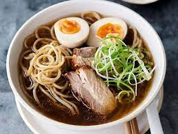

Ramen

Ramen noodles are synonymous with quick, easy meals.
But I’m not particularly fond of using those flavoring/seasoning packets that they come with.
This is where Marinated Fresh Pork comes into the picture! Mr K loves the ramen
and pork combination, and this Easy Pork Ramen is one of my go-to meals when
I’m short on time and it NEVER disappoints.
Ingredients
- 2 packets dried ramen noodles (plain noodles, without spice packets)
- 1 L chicken broth or beef broth, reduced salt (just over 4 cups)
- 1 inch ginger skin removed and sliced
- 3 garlic cloves sliced
- 2 spring onions / scallions cut into large sections
- ½ tbsp chili flakes crushed red pepper
- 1 ½ tsp black peppercorns either whole or coarsely ground
- etc
Steps
- Place all the ingredients except for the ramen noodles, mushrooms, Asian greens and chopped spring onions, in a pot
- 1 L chicken broth,1 inch ginger,3 garlic cloves,2 spring onions / scallions,½ tbsp chili flakes,1 ½ tsp black peppercorns,2 tbsp soy sauce
- Bring the stock to a boil over medium high heat
- Cover and let it simmer on medium - medium low heat for about 15 - 20 minutes
- nce the pork is cooked and ready to be sliced, you can remove the garlic cloves, ginger and spring onions from the broth
- Add the greens and blanch quickly for 1-2 minutes in the simmering water
- Remove the greens and set aside
- 4 stalks of Chinese greens like baby bok choy
- etc